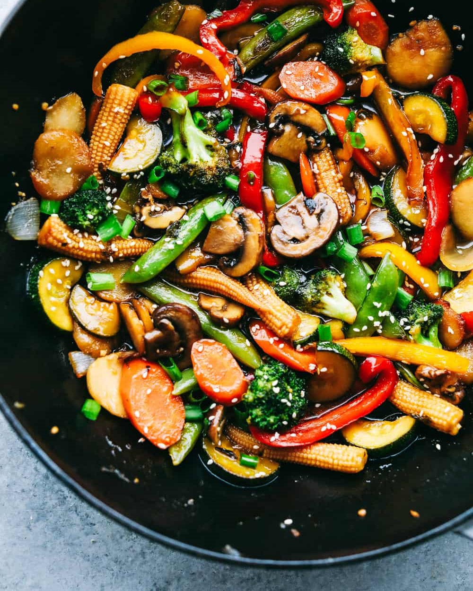

Vegetable Stir-Fry
Ingredients for the Stir-Fry:
- 2 tablespoons vegetable oil (such as peanut, canola, or sesame oil)
- 3 cups mixed vegetables (broccoli florets, bell peppers, carrots, snow peas, mushrooms, onions, etc.), sliced or chopped
- 2 cloves garlic, minced
- 1-inch piece of fresh ginger, grated or minced
- Salt and pepper to taste
Ingredients for the Sauce:
- 2 tablespoons soy sauce
- 1 tablespoon oyster sauce
- 1 tablespoon rice vinegar or white vinegar
- 1 teaspoon sesame oil (optional)
- 1 teaspoon cornstarch (to thicken the sauce)
- 1/4 cup vegetable or chicken broth or water
Instructions:
- Prepare the vegetables by washing, peeling (if necessary), and cutting them into bite-sized pieces or thin slices.
- In a small bowl, whisk together the ingredients for the sauce if you're using one (soy sauce, oyster sauce, vinegar, sesame oil, cornstarch, and broth/water). Set aside.
- Heat a wok or a large skillet over high heat. Add vegetable oil and swirl it around to coat the pan evenly.
- Add minced garlic and grated ginger to the hot oil. Stir-fry for about 30 seconds until fragrant but not burnt.
- Add the harder vegetables like carrots, broccoli, and bell peppers to the wok first, as they take longer to cook. Stir-fry for 2-3 minutes until they start to soften but remain crisp.
- Add the remaining vegetables to the wok and continue stir-frying for another 2-3 minutes until all the vegetables are tender yet still vibrant in color.
- If using the sauce, pour it over the vegetables in the wok and toss to coat evenly. Cook for an additional minute or until the sauce thickens slightly.
- Season the stir-fry with salt and pepper to taste. Be cautious with the salt if your sauce already contains soy sauce, as it is already salty.
- Once the vegetables are cooked to your desired tenderness, remove the wok from the heat.
- Serve the vegetable stir-fry as a side dish or over cooked rice or noodles.